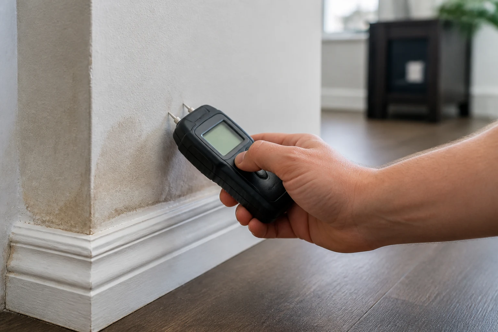
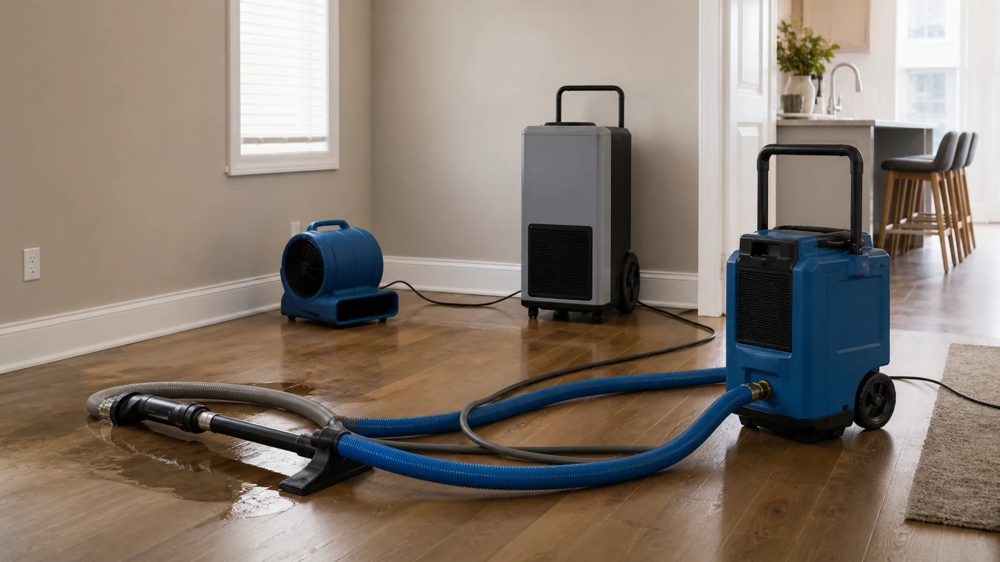
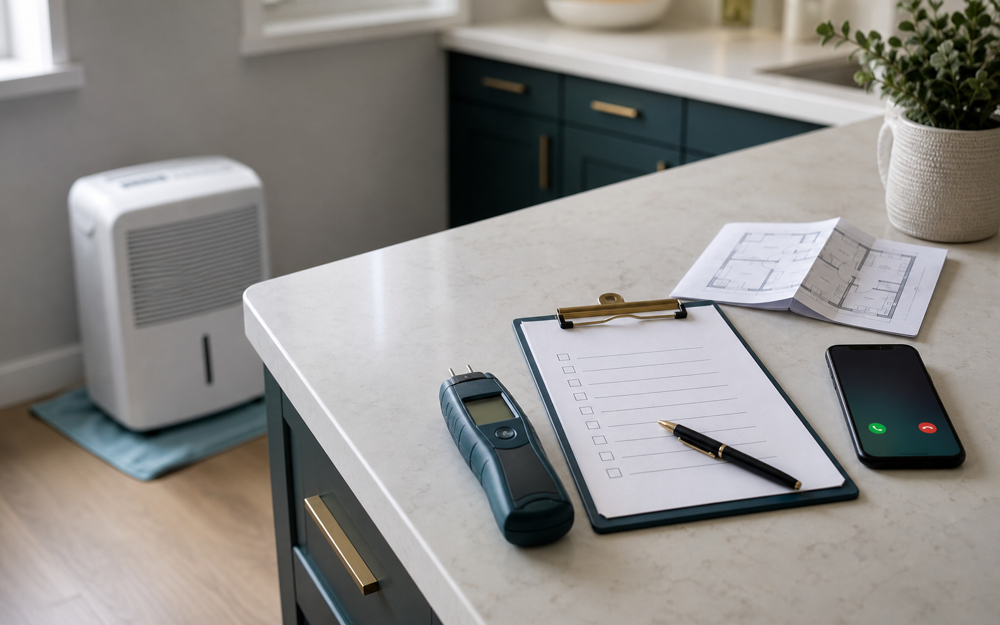
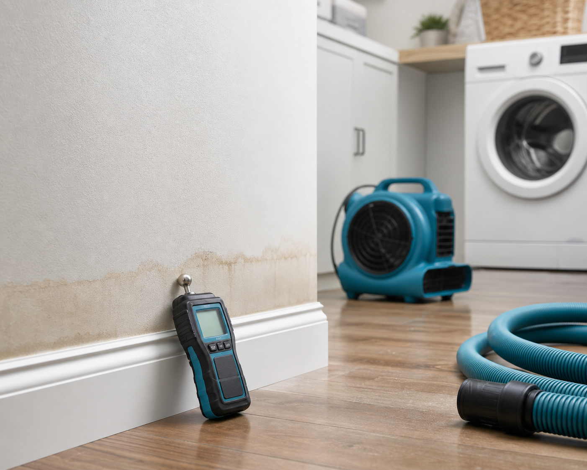

Burst pipes and supply lines
Ask whether hidden moisture checks are needed behind cabinets, trim, or walls.
helps homeowners, property managers, and commercial owners connect with independent local providers for water damage assessment, extraction, drying, and estimate requests.
Independent providers set their own availability, pricing, licensing, insurance, and work terms.


WaterFix Connect helps property owners describe the situation, compare independent local provider options, and prepare better questions before hiring a restoration company.
Use the platform to move from uncertainty to a practical plan: inspection, extraction, drying, documentation, and provider verification.
Explore common provider categories for inspection, extraction, drying, and damage-specific restoration support before choosing an independent local company.

The platform does not perform restoration work. It helps you describe the situation, compare local provider options, and prepare better questions before hiring.


helps connect property owners with independent local providers. It does not employ restoration crews, perform repairs, guarantee results, or replace homeowner due diligence.
Check licensing, insurance, written estimates, provider availability, and the proposed scope of work.

Ask whether hidden moisture checks are needed behind cabinets, trim, or walls.
Ask about safety, water source, extraction, humidity control, and drying documentation.
Ask how the provider will evaluate the source, affected materials, and moisture above the visible stain.
No. is a referral platform that helps users connect with independent local providers.
Yes. You can call or submit the form to request information and compare local provider options.
Yes. Homeowners and property owners should verify provider licensing, insurance, written scope, pricing, and terms before hiring.
Early inspection may help identify hidden moisture and reduce the chance of further damage.
Tell us what happened and connect with independent water damage restoration companies in your area.